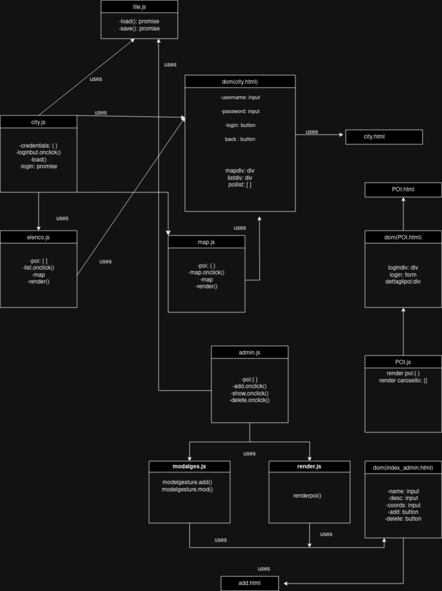

Documentazione
Point of interest Trieste
Questo progetto permette ad un admin di aggiungere o modificare un POI (Point Of Interest), e ad un utente loggato di visualizzare l'elenco dei POI e visualizzare nel dettaglio uno di questi.
- Classe/Anno:5Binf 23/24
- Author: Ciaramidaro, Boland, Fouad
- Creato: 24 novembre 2023
- Ultima modifica: 12 Dicembre 2023
Architettura informazione

UML
Diagramma di Casi d'uso

Diagramma di oggetti
Diagramma di Stato

Diagramma di Sequenza
Contenuti del progetto
Questo progetto ha 2 tipi di utenti un admin e molti user, l'admin può modificare o aggiungere POI, invece l'user visualizza l'elenco dei POI e poi può visualizzare in dettaglio il POI
Wireframes
.png)
POI
1)Giardino di Via San Michele:
Il Giardino di Via San Michele è un parco pubblico situato nel centro storico di Trieste, tra la via
della Cattedrale e la via San Michele. L’area, che era urbanizzata già in epoca romana, fu acquistata
dal Comune nel 1771 e trasformata in giardino pubblico. Nel 1953, ad opera della Selad (Sezione Lavoro
aiuto Disoccupato), fu costruito il giardino attuale. Il giardino si sviluppa su due livelli diversi
collegati da scalinate, con un piano delimitato da un pergolato di colonne in più l'area è attrezzata
per i giochi dei bambini mentre la zona superiore c'è una fontana al centro.


2)Statua James Joyce:
La Statua di James Joyce è una scultura in bronzo situata a Trieste, precisamente a Ponte Rosso sul
Canal Grande, realizzata dallo scultore triestino Nino Spagnoli nel 2004 per celebrare il centenario
dell’arrivo dello scrittore irlandese a Trieste. Ai piedi della statua si trova una targa con una
citazione tratta da una lettera di Joyce alla moglie Nora Barnacle,“La mia anima è a Trieste”. Joyce
arrivò a Trieste nel 1904 e vi rimase fino al 1920. Durante il suo soggiorno a Trieste, Joyce insegnò
inglese presso la Berlitz School e diede lezioni private di inglese presso le famiglie triestine.
Inoltre, Joyce scrisse gran parte del suo capolavoro, “Ulisse”, a Trieste. La statua di James Joyce è
diventata un punto di riferimento per i turisti che visitano Trieste e un simbolo della città .


3)piazza dell'unità:
La Piazza Unità d’Italia è la piazza principale di Trieste, situata ai piedi del colle di San Giusto,
tra il Borgo Teresiano e Borgo Giuseppino. Di pianta rettangolare, su un’area totale di 12.280 m², si
apre da un lato sul Golfo di Trieste ed è circondata da numerosi palazzi ed edifici pubblici. La piazza
è stata rimodellata più volte nel corso dei secoli. L’aspetto attuale le deriva dalla ristrutturazione
completa che ha avuto nel periodo 2001-2005, quando tutti i palazzi sono stati oggetto di restauro, la
fontana dei Quattro Continenti è stata posizionata davanti all’ingresso principale del Municipio,
riportandola nella sua locazione originaria, e sul lato mare è stato installato un sistema di
illuminazione con led luminosi blu che intendono ricordare l’antico mandracchio interrato.


4)risiera di san sabba
La Risiera di San Sabba è un complesso di edifici situato a Trieste, che ha funzionato durante la
seconda guerra mondiale come campo di concentramento nazista per la detenzione e l’uccisione di
prigionieri politici ed ebrei e come campo di transito per Auschwitz. Il complesso è stato costruito
come stabilimento industriale per la lavorazione del riso nel rione di San Sabba tra il 1898 e il 1913.
Dopo 8 settembre 1943, l’occupatore nazista lo utilizzò come campo di prigionia, deposito dei beni
razziati e per la detenzione ed eliminazione di ostaggi, partigiani, detenuti politici ed ebrei. La
Risiera di San Sabba è stata il luogo di morte di circa 5.000 persone, tra cui 3.000 ebrei . Il
complesso è stato dichiarato monumento nazionale nel 1965 e dal 1975 ospita il Museo della Risiera di
San Sabba.


5)stadio nereo rocco
Lo Stadio Nereo Rocco è il principale impianto calcistico della città di Trieste, dedicato all’omonimo
calciatore e allenatore. È stato inaugurato nel 1992 e ha una capienza di 26.566 posti a sedere. Lo
stadio è stato progettato dall’architetto Mario Zarattini e si trova nel quartiere di Valmaura, alla
periferia sud della città, vicino al vecchio stadio Giuseppe Grezar. Oltre ad ospitare gli incontri
interni della Triestina, lo stadio è stato utilizzato anche per spettacoli come ad esempio concerti.


6)Kleine Berlin
Kleine Berlin è un complesso di gallerie antiaeree che risale alla seconda guerra mondiale. Si trova
sotto la città di Trieste e consiste in quattro gallerie comunicanti, costruite dall'esercito tedesco,
con lo scopo di difendere soldati e civili dai bombardamenti aerei. Il complesso è composto da una
galleria antiaerea pubblica per la popolazione civile e da un ricovero antiaereo militare tedesco, con
una galleria principale e diramazioni laterali. La parte costruita dagli italiani e utilizzata come
rifugio antiaereo per i civili fu scavata nella roccia nuda e tutti dovevano portare uno sgabello da
casa, per non dover stare in piedi. C'erano solo due bagni e un'infermeria. La parte costruita dai
militari tedeschi era utilizzata come deposito, magazzino e spazio ufficio, ed era utilizzata come
rifugio antiaereo riservato ai militari e ai civili tedeschi durante i raid aerei ed è coperta da uno
spesso strato di calcestruzzo.


7)canal grande
Canal Grande di Trieste è un canale navigabile che si trova nel cuore del Borgo Teresiano, in pieno
centro della città, a metà strada circa tra la stazione ferroviaria e piazza Unità d’Italia, con
imboccatura dal bacino di San Giorgio del Porto Vecchio. Fu realizzato nel 1754-1756 dal veneziano
Matteo Pirona, scavando ulteriormente il collettore principale delle saline, quando queste vennero
interrate per permettere lo sviluppo urbanistico della città all’esterno delle mura. Il canale era più
lungo di come si presenta oggi, ed arrivava sino a lambire la chiesa di Sant’Antonio. La parte terminale
del canale è stata infatti interrata nel 1934, con le macerie derivanti dalla demolizione della città
vecchia, ricavando così l’attuale piazza Sant’Antonio.


8)cattedrale di san giusto martire
a Cattedrale di San Giusto Martire è il principale edificio religioso cattolico, nonché duomo della
città di Trieste. Si trova sulla sommità dell’omonimo colle che domina la città. L’aspetto attuale della
basilica deriva dall’unificazione delle due preesistenti chiese di Santa Maria e di quella dedicata al
martire san Giusto, che vennero inglobate sotto uno stesso tetto dal vescovo Rodolfo Pedrazzani da
Robecco tra gli anni 1302 e 1320 per provvedere la città di una cattedrale imponente. La cattedrale fu
consacrata nel 1385 dal primo vescovo tedesco di Trieste, Enrico de Wildenstein. Sia il campanile che la
facciata della chiesa sono coperti con reperti del periodo romano. Il campanile ospita un complesso di
cinque grandi campane.


9)piazza della borsa
Piazza della Borsa è una delle piazze principali di Trieste. Conosciuta anche come il secondo salotto
buono cittadino la piazza è stata il centro economico della città per tutto il XIX secolo.
È la piazza immediatamente adiacente a piazza Unità d'Italia e, restringendosi, prosegue fino all'inizio
di corso Italia, un'importante arteria cittadina. Il luogo ove sorge la piazza si trovava anticamente
appena fuori dalle mura cittadine. Infatti nel punto dove si trova il passaggio con piazza Unità si
trovava la porta di Vienna e le case che delimitano la piazza verso monte seguono la linea delle antiche
mura verso la torre di Riborgo.
La piazza inizialmente si chiamava piazza della Dogana, dal nome dell'edificio che sorgeva al posto
dell'attuale Tergesteo. Il suo nome attuale le deriva da un evidente toponimo dovuto al palazzo
costruito nel 1806 dall'architetto maceratese Antonio Mollari per ospitare le attività dei commercianti
di Borsa. Tale edificio, che contraddistingue la piazza e che costituisce uno degli esempi più rilevanti
dei monumenti neoclassici triestini, è attualmente sede della Camera di commercio, industria,
artigianato e agricoltura di Trieste, ed è chiamato anche Borsa vecchia, in quanto la Borsa si è
spostata dapprima nel 1844 al Tergesteo, e quindi nel 1928 in un palazzo attiguo (ex palazzo Dreher) che
viene perciò anche chiamato Borsa nuova.
A fianco di questo palazzo si trovava un tempo il Canal Piccolo, ancor oggi ricordato dal nome della
via, che attraverso la Portizza e via del Ponte arrivava fino al centro della città vecchia. Il canale
fu interrato nel 1816.
Nella piazza si affacciano numerosi altri palazzi, oggi adibiti per lo più a sedi bancarie o a negozi.
Interessante è l'edificio in stile liberty realizzato dall'architetto Max Fabiani nel 1905 (casa
Bartoli). Sempre nella piazza si affaccia l'antica galleria coperta del palazzo del Tergesteo
(architetto Buttazzoni - inaugurato nel 1842), che crea un collegamento pedonale fino alla piazza
antistante il teatro lirico "Giuseppe Verdi". Nel palazzo del Tergesteo trovano posto anche alcuni dei
caffè storici di Trieste.


Il progetto
In questa sezione vanno inserite ulteriori informazioni aggiuntive (es. credenziali) ed il link al progetto